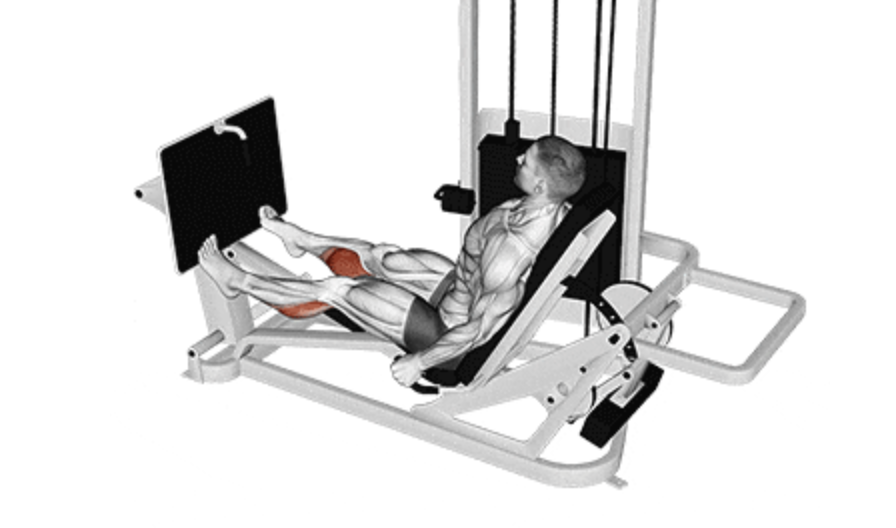

Calf Press
Setup
Adjust the leg press machine seat and foot platform to your comfort.
Sit down and place the balls of your feet on the lower portion of the platform shoulder-width apart.
Keep your heels hanging slightly off the edge to maximize range of motion.
Maintain a straight posture with your back flat against the pad.
Unlock the safety handles and fully extend your legs without locking your knees.

Execution
Lower:
Slowly lower the weight by letting your heels dip downward while keeping your toes on the platform.
Press:
Push through the balls of your feet to raise your heels as high as possible, contracting your calves.
Repeat:
Perform the desired number of reps with controlled form and steady breathing.
Tips for Effectiveness
Don’t Bounce:
Avoid bouncing at the bottom; use slow and controlled movements for full engagement.
Full Range of Motion:
Allow your heels to fully dip and rise to maximize calf activation.
Consistent Tempo:
Use a steady tempo for better mind-muscle connection.
Focus:
Keep your toes stable and aligned to avoid uneven muscle development.
Benefits of Leg Calf Press
Calf Development:
Targets the gastrocnemius and soleus muscles for improved size and shape.
Ankle Strength:
Enhances stability and flexibility in the ankle joint.
Low Impact:
Safer on joints compared to standing calf raises due to seated support.
Balance & Athleticism:
Improves lower-body coordination and functional performance.
Do you want to change the language of this page?
English
Malayalam
Tamil
Hindi